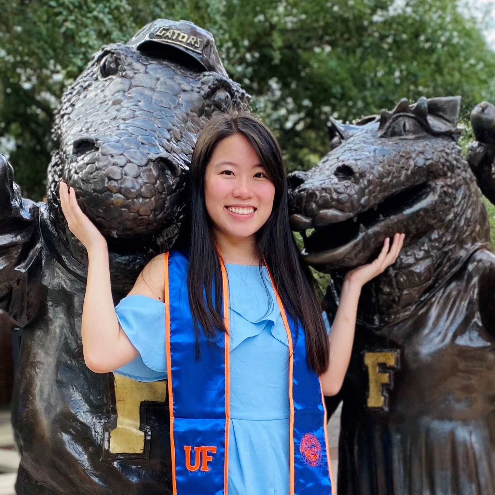

I'm a recent University of Florida grad interested in mobile development, front end design, and UI/UX. 🎓
I enjoy solving problems and improving my skills everyday.

Experience
Mentee | Infotech
January 2020 - April 2020
Worked with a mentor at Infotech to develop a mobile fitness progress tracker application for users to log
their workouts and view summary statistics of logged workouts
Utilized NativeScript, Vue.js, Typescript, CSS, and Firebase
Focused on user experience design by referencing Material Design principles and performing user tests
Gained firsthand industry experience in using Agile methodology, Git, and GitHub
Learning Assistant | University of Florida Department of Mathematics
August 2018 - December 2018
Facilitated learning of Calculus 1 concepts by answering questions and guiding 30+ students in completion
of weekly worksheets
Coordinated with the professor to anticipate lecture topics and prepare accordingly to maximize ability to
assist students
Developed strong verbal communication skills through explaining theoretical ideast
Intern | University of Florida Tropical Research and Education Center
May 2017 - August 2017
Used R to analyze over 19 million data entries for weather variables gathered from 40+ stations in FL
Aggregated 15-minute interval data points into hourly, daily, monthly, and yearly selections
Initial exposure to computer science which led to my decision to major in it